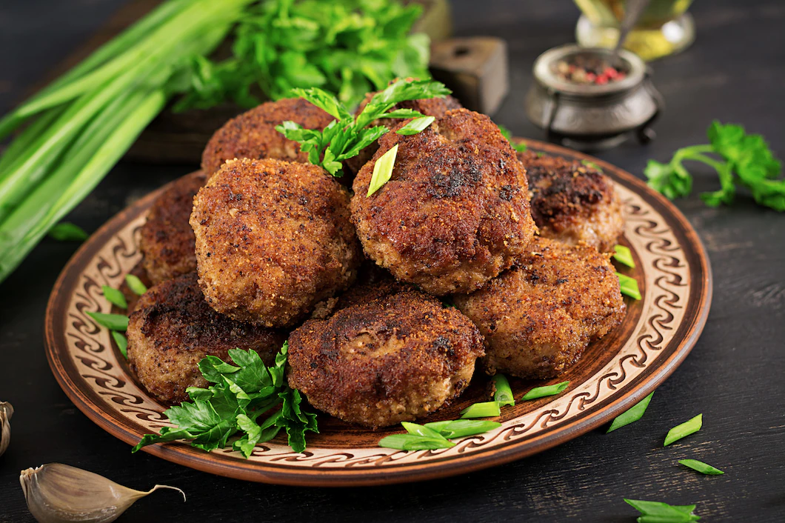

Veg Cutlet

Prep Time:
Cook Time:
Servings:
Cuisine:
10min
30min
12 Cutlets
Indian
Ingredients
For pressure cooking
- 2 potato
- ¼ cup carrot
- ¼ cup beans
- ¼ cup sweet corn
- ½ cup peas
- ½ cup beetroot
- ¼ tsp salt
For Cutlet
- ¼ cup breadcrumbs
- ½ tsp kashmiri red chilli powder
- ¼ tsp cumin powder / jeera powder
- ¼ tsp garam masala
- ½ tsp aamchur / dry mango powder
- 1 tsp ginger garlic paste
- 2 tbsp coriander (finely chopped)
- ¼ tsp salt
- 1 cup corn flakes (crushed)
- oil for deep frying
For corn flour batter
- 3 tbsp corn flour
- 2 tbsp maida / plain flour
- ¼ tsp pepper
- ¼ tsp salt
- ¼ cup water
Recipe
- Mash the cooked vegetables completely
- Add ¼ cup breadcrumbs. you can alternatively use bread dipped in water.
- Additionally, add ½ tsp chilli powder, ¼ tsp cumin powder, ¼ tsp garam masala, ½ tsp aamchur, 1 tsp ginger garlic paste, 2 tbsp coriander and ¼ tsp salt.
- now prepare corn flour batter by mixing 3 tbsp corn flour, 2 tbsp maida, ¼ tsp pepper and ¼ tsp salt.
- add ¼ cup water and prepare a smooth lump free batter.
- now take a ball sized vegetable mixture and roll to cylindrical shape greasing hands with oil.
- Dip in corn flour batter, and coat with crushed corn flakes/breadcrumbs.
- deep fry in hot oil/bake in preheated oven at 180-degree celcius for 15-20 minutes
- Serve the hot, fresh Veg Cutlet with tomato sauce :)